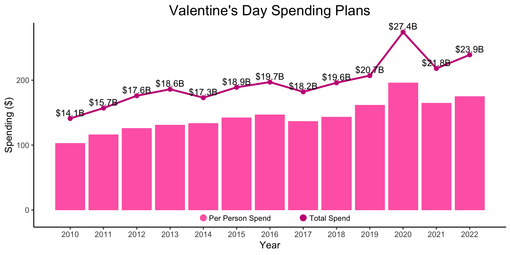
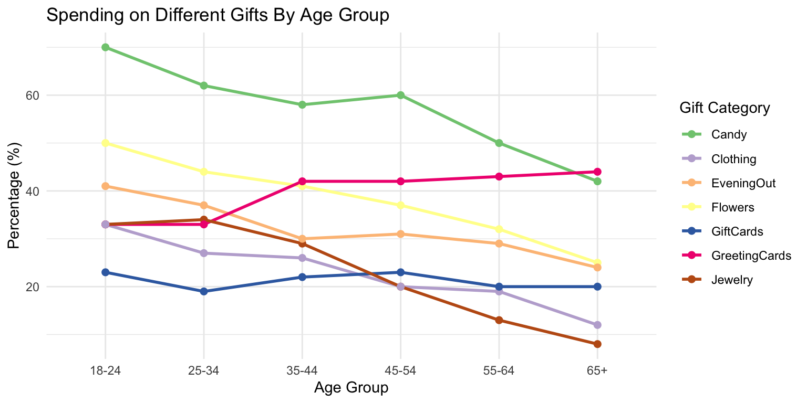
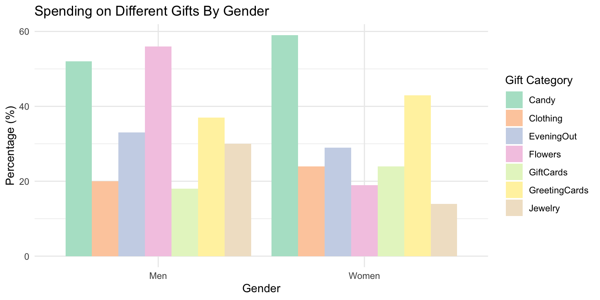

Valentine’s Day: A Love Story for Consumers and Retailers Alike
As Valentine’s Day approaches, many of us start thinking about how to show our love and appreciation for our partners, friends, and family. However, Valentine’s Day is more than just a day of love; it’s also a major event for retailers that drives billions of dollars in consumer spending on gifts and celebrations each year. While traditional gifts like flowers, candy, and greeting cards remain popular, younger generations are redefining how Valentine’s Day is celebrated by exploring alternatives beyond these traditional gifts. National Retail Federation(NRF) President and CEO Matthew Shay said that “with consumers prioritizing their spouse or significant other this year, retailers expect to see a shift in spending for certain gifting categories.” As consumer preferences shift, do Valentine’s Day retailers need a modern makeover to meet the demand? Here, we will examine the evolving landscape of Valentine’s Day spending through insights from NRF surveys, providing essential trends for retailers and marketers to adapt their strategies and offerings.
How do we get the data?
Data descriptions
We obtained the dataset to analyze the Valentine’s Day Consumer Spending Trends from the Kaggle under TidyTuesday repository, compiled by Suraj Das and sourced from the National Retail Federation (NRF) surveys. These surveys provide insights into consumer spending patterns during Valentine’s Day, with responses collected annually from 2010 to 2022. Key variables in the dataset include:
Age: Age of respondents.
Gender: Gender of respondents (Men or Women).
SpendingCelebrating: Percent spending money on or celebrating Valentines Day
Gift Categories: Average percent spending on various gift types, including candy, flowers, jewelry, greeting cards, and experiences.
Is the data clean?
There are two combined dataset are clean and pre-prepared. These datasets were combined based on demographic categories to provide a comprehensive analysis of Valentine’s Day spending trends.
More Than Flowers and Chocolates with Today’s Choices
Recent insights of the Valentine’s Day consumer data from the National Retail Federation (NRF) reveal interesting trends in how people choose to celebrate this occasion. While traditional gifts like flowers and chocolates remain popular, there is a noticeable shift in consumer preferences. As shown in Figure 1, spending on Valentine’s Day has increased from $14.1 billion in 2010 to $23.9 billion in 2022. Consumers expect to spend an average of $175.41 per person on Valentine’s Day gifts, up from $164.76 in 2021. These increases reflect changing consumer perspectives and spending behaviors, indicating that people are willing to invest more in their celebrations or in their significant others or spouses.
Interestingly, while overall spending continues to grow, the percentage of people celebrating Valentine’s Day has declined from 60% in 2010 to just 53% this year. This suggests that those who do celebrate are spending more, despite a growing segment of the population who are choosing to skip the holiday altogether.
| Year | Candy | Flowers | Jewelry | Greeting cards | An evening out | Clothing | Gift cards |
|---|---|---|---|---|---|---|---|
| 2010 | 47% | 36% | 15% | 55% | 36% | 14% | 11% |
| 2022 | 56% | 37% | 22% | 40% | 31% | 22% | 21% |
Taking a closer look at the survey data reveals some fascinating shifts in gift preferences. According to Table 1, greeting cards were the most favored gift among consumers in 2010 (56%). However, that percentage dropped to 40% in 2022, indicating a trend towards more memorable and meaningful gifts rather than expensive items. This shift highlights a rising interest in celebrating Valentine’s Day in unique ways, focusing on original experiences or handmade gifts rather than traditional pricey options.

Clara Ludmir (2024), a Forbes contributor, said that “while flowers, candy and greeting cards still top the list of main gifts, younger generations are shifting the way Valentine’s Day is being celebrated, looking beyond traditional gifts.” Figure 2 shows that younger consumers (ages 18-34) are more inclined toward purchasing candy (70%), flowers (50%), and spending on an evening out (40%), while older demographics (from ages 35 to ages 55 and above) tend to favor memorable gifts like greeting cards, candy, and flowers. It looks like the decline in greeting card sales in 2022 (Table 1) may be connected to older consumers choosing not to celebrate Valentine’s Day. For instance, only 19% of consumers aged 45-54 indicated that they would celebrate this holiday, according to a survey data released by the NRF.

The survey data reveals that both genders spending money on or celebrating Valentines Day are the same (27%). However, when it comes to the types of gifts purchased, the differences are quite interesting. As highlighted in Figure 3, men are more likely to buy jewelry and expensive experiences, while women often opt for more budget-friendly options like greeting cards, candy, and clothing. Interestingly, even as younger generations change how they celebrate Valentine’s Day and move away from traditional gifts, the preference for flowers remains strong among men. In fact, 56% of men still purchase flowers, compared to only 19% of women. This indicates that flowers continue to represent a traditional mindset in gift-giving, typically given by men rather than women, regardless of age or the changes that have taken place over time. Therefore, retailers who heavily rely on Valentine’s Day sales can be confident that this aspect of consumer behavior is unlikely to change.
The analysis of Valentine’s Day spending trends reveals some significant shifts in consumer preferences. These shifts represent an interesting opportunity for retailers across various categories to leverage Valentine’s Day to promote their products. While total spending has generally increased, this could be driven by both inflation and evolving preferences toward experiences over traditional gifts. It’s also important to note the decline in the percentage of people celebrating the holiday. Younger generations are stepping away from traditional gifts—especially greeting cards—favoring experiences and more personalized options instead. In contrast, older generations tend to purchase sentimental or memorable items.
Gender differences and demographic factors play a crucial role in shaping spending patterns, providing valuable insights for targeted marketing strategies. Young men, in particular, emerge as key consumers, often feeling uncertain about what to buy for Valentine’s Day. This analysis highlights both the challenges and opportunities for retailers, emphasizing the importance of understanding evolving consumer preferences in order to tailor marketing strategies and product offerings effectively. As younger consumers seek more meaningful ways to celebrate love, they may prefer original and unique gifts over traditional gift categories. “This will push retailers to innovate and be creative, allowing traditional gifts like flowers and chocolates to make space for fresh alternatives like non-alcoholic spritzers and self-care beauty packages.” said Clara Ludmir, a Forbes contributor. Despite the changes in how Valentine’s Day is celebrated, the holiday continues to be a significant event for consumer spending, with sales expected to grow in the coming year.